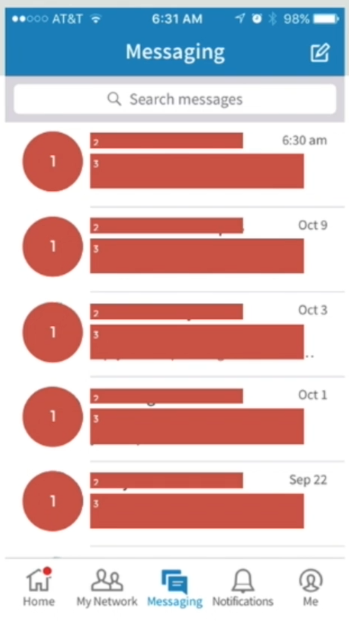
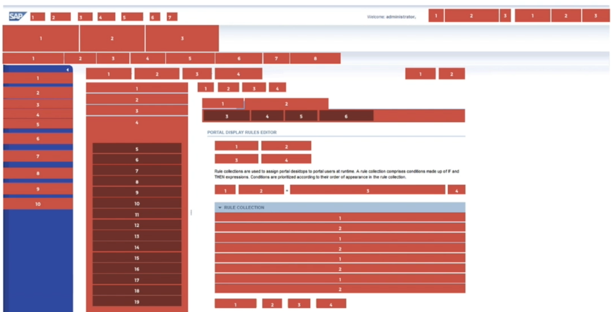

Jump to a section
11 · Rhythm - Establishing and Reinforcing Comprehension
Refined 15 October 2026 from the supplied Joe Natoli course notes. Original wording and captures remain preserved.
Core principle
Rhythm is the predictable recurrence of related elements and the intervals between them.
Application to game tools
Repeat asset-row order, label spacing and state treatment so a user can scan successive items.
Assessment and qualification
A repeated pattern can also repeat a poor choice; consistency must serve the task.
Try it
Which detail should remain stable from one row to the next?
Source: 11 Rhythm - Establishing and Reinforcing Comprehension.md
Study detail and teaching translation
Repetition creates an expectation: users learn where a label, value, status or action will appear in the next instance.
Intervals participate in the pattern. Consistent spacing within a group and between repeated groups can make the sequence easier to scan.
Teaching adaptation: keep asset identity, before, after and status in a predictable order. Reserve a deliberate pattern break for an exception that deserves attention.
Original captures

